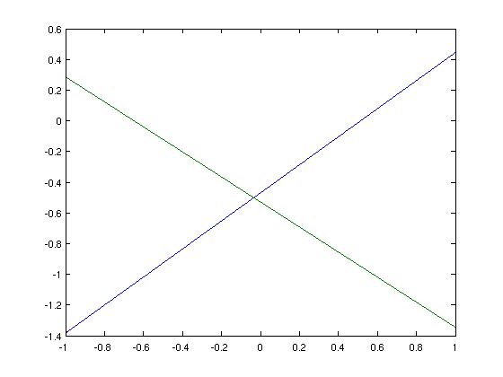
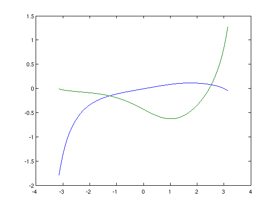
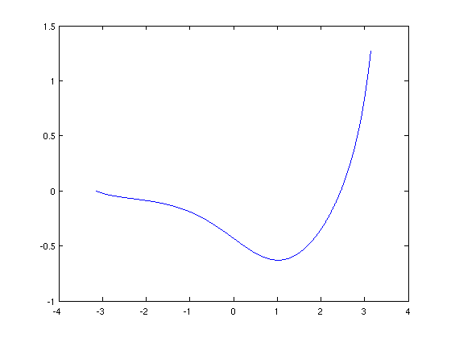
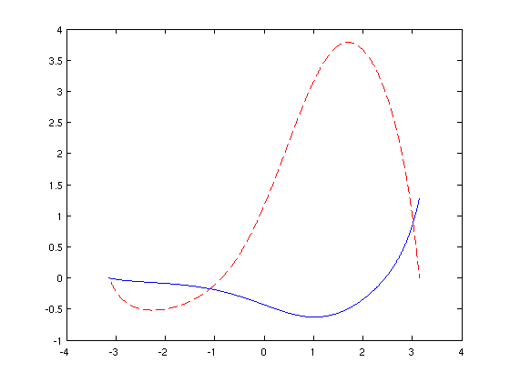
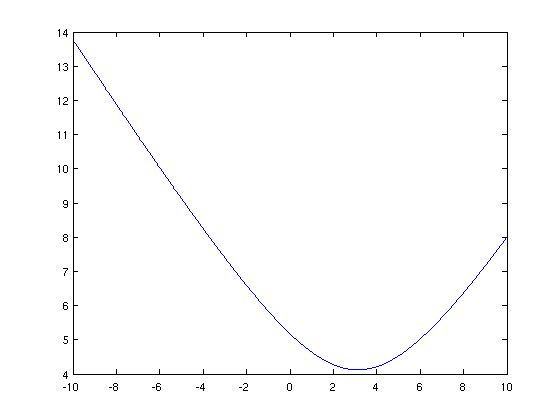
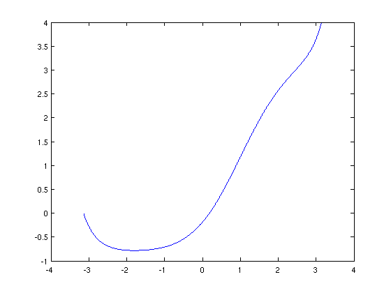
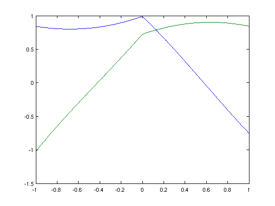

The Nullspace of Linear Operators
Nick Hale & Stefan Güttel, 12th December 2011
Contents
(Chebfun example ode-eig/NullSpace.m)
We've recently introduced some new functionality in Chebfun for computing the nullspace of differential operators. Let's explore this with a couple of simple examples!
Simple Example #1
Let's start as simply as we can, and take
u"(x) = 0, for x in [-1 1]
L = chebop(@(u) diff(u,2));
Clearly the nullspace, that is the nontrivial functions v for which
L(v) = 0,
for this operator is spanned the two functions
v = [1 chebfun('x')];
norm(L*v)
ans =
0
Supposing we didn't know this, we could compute the space with the new NULL function.
V = null(L) plot(V) V'*V norm(L*V)
V =
chebfun column 1 (1 smooth piece)
interval length endpoint values
[ -1, 1] 7 -1.4 0.44
vertical scale = 1.4
chebfun column 2 (1 smooth piece)
interval length endpoint values
[ -1, 1] 7 0.29 -1.3
vertical scale = 1.3
ans =
1.0000 0.0000
0.0000 1.0000
ans =
7.3130e-12
 where we find that V'V = I and LV ~ 0 as required.
Clearly V doesn't correspond directly to 1 and x, since there is some freedom in how we orthogonalise the basis. However, we can check that V and {1,x} correspond to the the same spaces by computing the angle between the spaces with the SUBSPACE command.
subspace(v,V)
ans = 5.4439e-13
Incomplete boundary conditions
Now let's consider the more complicated 2nd-order operator
Lu = u'' + .1*(1-x.^2)u' - sin(x)u, x in [-pi pi] (*)
dom = [-pi pi];
L = chebop(@(x,u) diff(u,2) + .1*x.*(1-x.^2).*diff(u) + sin(x).*u, dom);
x = chebfun('x',dom);
As before, it has a nullspace of rank 2.
V = null(L) plot(V) V'*V norm(L(x,V(:,1))) norm(L(x,V(:,2)))
V =
chebfun column 1 (1 smooth piece)
interval length endpoint values
[ -3.1, 3.1] 39 -1.8 -0.044
vertical scale = 1.8
chebfun column 2 (1 smooth piece)
interval length endpoint values
[ -3.1, 3.1] 40 -0.011 1.3
vertical scale = 1.3
ans =
1.0000 0.0000
0.0000 1.0000
ans =
1.1447e-10
ans =
4.9739e-11
 However, now suppose we impose ONE boundary condition, say Dirichlet at the left. This removes ONE degree of freedom, and we are now left with a rank 1 nullspace.
L.lbc = 0; L.rbc = []; v = null(L) plot(v), shg v'*v norm(L(x,v))
v =
chebfun column (1 smooth piece)
interval length endpoint values
[ -3.1, 3.1] 40 -3.4e-15 1.3
vertical scale = 1.3
ans =
1.0000
ans =
4.9698e-11
 Clearly this null vector must satisfy the given condition v(-pi) = 0.
An application
Where might this be useful? Well, suppose we were interested in equation (*) with a homogeneous Dirichlet condition at the left, and wanted to know what inhomogenous Dirichlet condition gave the minimal 2-norm of the solution to Lu = 1.
Rather than solving the linear system for a number of different boundary conditions (which would be computationally expensive) we could simply solve for one, say again homogenous Dirichlet
L.rbc = 0; u = L\1; hold on, plot(u,'--r'), hold off;
and compute the rest by adding a scalar multiple of the null-function v.
E = chebfun(@(c) norm(u+c*v,2),'vectorise',[-10 10],'splitting','on'); plot(E)
We compute the 2-norm as a chebfun in the unknown variable c, which we can then minimise to obtain the minimal energy solution
[minE c_star] = min(E) u_star = u + c_star*v plot(u_star)
minE =
4.1220
c_star =
3.1438
u_star =
chebfun column (1 smooth piece)
interval length endpoint values
[ -3.1, 3.1] 44 -5.7e-15 4
vertical scale = 4
 So the condition we require is that u(pi) = bc_star, where
bc_star = u_star(pi)
bc_star =
3.9894
Exotic constraints
The NULL function can also handle the exotic types of boundary conditions that can be enforced in Chebfun (see [1]). For example, suppose we wish to again compute the null-space of the 3rd-order piecewise-smoooth ODE
Lu := 0.001u''' + sign(x)*u'' + u, x in [-1 1]
with the 'boundary' condition that
sum(u) = u(0).
dom = [-1 1];
L = chebop(@(x,u) 1e-2*diff(u,3) + sign(x).*diff(u,2) + u);
L.lbc = []; L.rbc = [];
L.bc = @(u) sum(u)-u(0);
x = chebfun('x',dom);
Here NULL has no problems!
V = null(L) plot(V), shg V'*V
V =
chebfun column 1 (2 smooth pieces)
interval length endpoint values
[ -1, 0] 65 0.84 0.98
[ 0, 1] 64 0.98 -0.75
Total length = 129 vertical scale = 0.98
chebfun column 2 (2 smooth pieces)
interval length endpoint values
[ -1, 0] 65 -1 0.72
[ 0, 1] 65 0.72 0.84
Total length = 130 vertical scale = 1
ans =
1.0000 -0.0000
-0.0000 1.0000
 sum(V(:,1))-V(0,1) norm(L(x,V(:,1)),1) sum(V(:,2))-V(0,2) norm(L(x,V(:,2)),1)
ans = 1.4380e-12 ans = 4.8847e-09 ans = -7.6439e-13 ans = 4.5108e-09
References
[1] http://www.maths.ox.ac.uk/chebfun/examples/ode/html/NonstandardBCs.shtml